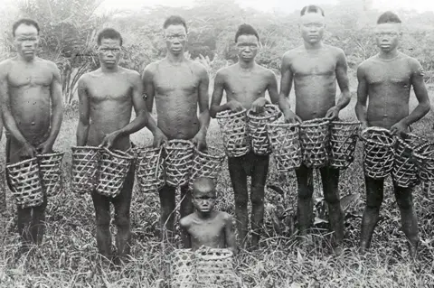
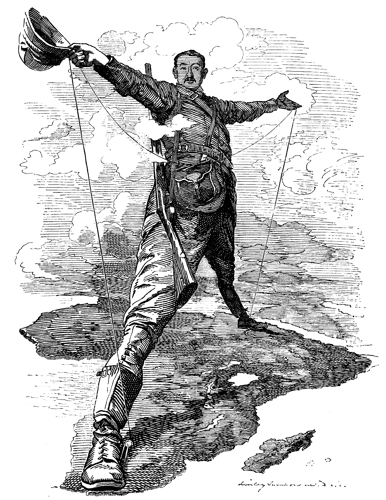
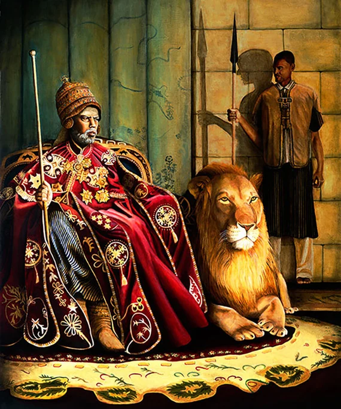
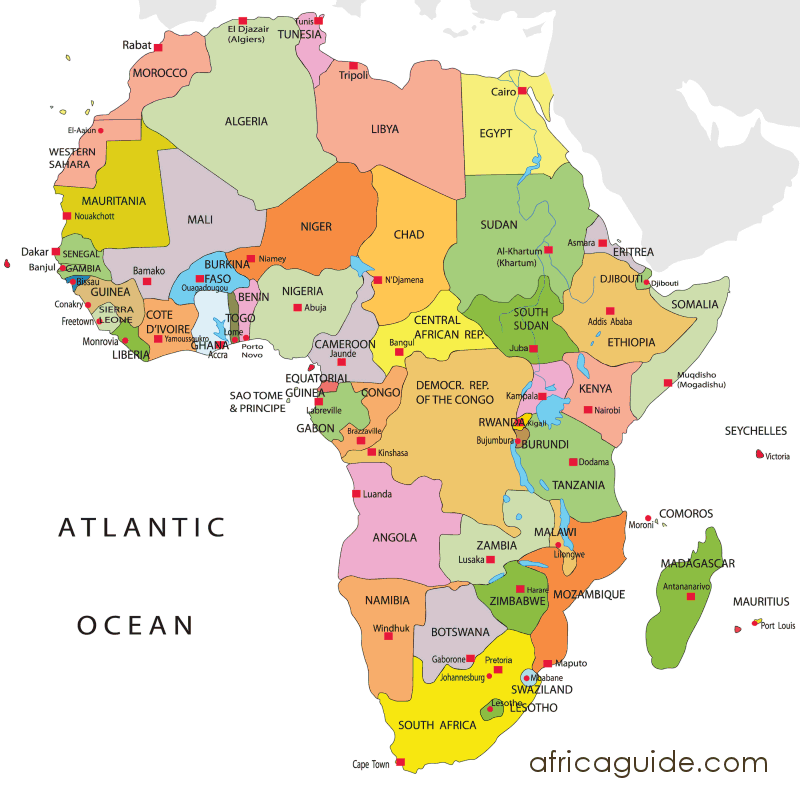

ESSENTIAL QUESTIONWhy did powerful nations take over weaker ones, and what did colonized peoplePeople living under foreign control. do about it?
1870SIndustrial powers begin a faster race for colonies, raw materials, and global status.
1884-1885European powers meet at the Berlin Conference and set rules for claiming African land without African representatives present.
1896Ethiopia defeats Italy at the Battle of Adwa and remains independent.
1899Imperial ideas and anti-imperial criticism spread through poems, cartoons, speeches, and newspapers.
1914European powers control more than 90 percent of Africa, while resistance continues across colonized regions.
In 1884, European diplomatsOfficials who represent countries in foreign talks. met in BerlinCapital city of Germany. and argued over a giant map of Africa. They used rulers, colored pencils, and treaty language. What they did not have was a single African representativeSomeone speaking for African people or states. in the room. They drew bordersLines that separate countries or territories. across rivers, deserts, villages, and kingdomsStates ruled by kings or queens. as if people were not already living there.
In 1884, European diplomats met in Berlin. They argued over a giant map of Africa. They used rulers and colored pencils. No African representative was in the room. They drew borders across rivers, deserts, villages, and kingdoms.
This meeting became a symbol of New ImperialismFast empire-building from about 1870 to 1914.. Powerful nations claimed they were spreading progressThe idea that society is improving., religion, and order. In reality, they took land, labor, and resourcesTerritory, workers, and valuable materials. from millions of people. Colonized people did not simply accept this. They resisted from the start.
This meeting became a symbol of New Imperialism. Powerful nations said they were spreading progress and order. In reality, they took land, labor, and resources. Colonized people did not simply accept this. They resisted from the start.
CHAPTER ONE
THE SCRAMBLE FOR AFRICA
The Berlin Conference, 1884-1885. European powers discussed Africa without African leaders present. Wikimedia Commons.
ImperialismWhen a powerful country controls another place for power or profit. means one country takes control of another place. EmpiresStates that control other lands and peoples. had existed before, but New Imperialism moved with unusual speed. Between about 1870 and 1914, European powers and the United States claimed huge parts of Africa, Asia, and the Pacific. They wanted land, raw materialsNatural resources used to make products., trade routesPaths used to move goods for trade., and statusPower, respect, or rank..
Imperialism means one country controls another place. Empires had existed before. New Imperialism moved faster. From about 1870 to 1914, Europe and the United States claimed huge areas in Africa, Asia, and the Pacific. They wanted land, materials, trade, and power.
Africa became the clearest example. In 1880, Europeans controlled only a small part of the continent. By 1914, they controlled more than 90 percent. Britain, France, Germany, Belgium, Portugal, Italy, and Spain raced to claim territoryLand controlled by a government. before rivals could take it. This race became known as the Scramble for Africa.
Africa became the clearest example. In 1880, Europeans controlled only a small part of Africa. By 1914, they controlled more than 90 percent. European countries raced to claim land before rivals could take it. This was the Scramble for Africa.
Colonial Africa, 1914. Almost the whole continent was under European rule. Only Ethiopia and Liberia remained independent. Wikimedia Commons.
European leaders often said they were bringing civilizationA word empires used to claim superiority.. That word hid what was really happening. ColonizersPeople or countries that take control of others. set borders, controlled governments, taxed people, forced laborWork people are made to do by force., and took resources. They treated African kingdomsAfrican states with their own rulers and systems. as obstacles instead of nations with their own histories and systems of rule.
European leaders often said they were bringing civilization. That word hid what was really happening. Colonizers drew borders, controlled governments, taxed people, forced labor, and took resources. They treated African kingdoms like obstacles.
Real-world connection: Many borders created during imperialism still shape modern countries, conflicts, and identities.
Real-world connection: Many borders made during imperialism still shape countries today.
DID YOU KNOW

Rubber demand helped drive forced labor in the Congo.
One of the strangest links in this era runs from bicycle tires to terror in Central Africa. As rubber became useful for tires, hoses, and machines, King Leopold's agents forced Congolese workers to meet brutal rubber quotasRequired amounts people had to produce.. A product that looked modern and exciting in Europe was tied to violence thousands of miles away.
FAST FACTS
THE SCALE OF NEW IMPERIALISM IN AFRICA
14European and U.S. representatives took part in the Berlin Conference that shaped rules for claiming African land.
0African representatives were invited to the Berlin Conference, even though African land and people were being discussed.
90%+More than 90 percent of Africa was under European colonial control by 1914.
10MAbout ten million people were lost from Congo's population during the most violent decades of rubber exploitation.
2Only Ethiopia and Liberia remained independent African states when the Scramble for Africa ended.
CHAPTER TWO
THE TOOLS OF EMPIRE
British soldiers with a Maxim gun, circa 1895. The machine gun became a symbol of the military gap between imperial powers and many local armies. Wikimedia Commons.
New Imperialism grew because industrial nationsCountries with factories, machines, and mass production. had new tools. SteamshipsShips powered by steam engines. moved soldiers and supplies across oceans. RailroadsTrain systems that move people and goods. moved armies inland. Telegraph cablesWires that sent messages over long distances. let officials send orders across continents. QuinineMedicine used to treat malariaA dangerous disease spread by mosquitoes.. helped Europeans survive malaria in tropical regionsWarm areas near the equator.. Technology made conquest faster and easier.
New Imperialism grew because industrial nations had new tools. Steamships moved soldiers across oceans. Railroads moved armies inland. Telegraph cables sent orders quickly. Quinine helped Europeans survive malaria. Technology made conquest faster.
The Maxim machine gun became one of the most deadly tools. It could fire hundreds of rounds per minute. Many African and Asian armies fought bravely, but courage could not erase the gap in weapons. Industrial power turned battles into one-sided massacres.
The Maxim machine gun was one of the deadliest tools. It could fire hundreds of rounds each minute. Many African and Asian armies fought bravely. But courage could not erase the weapons gapA major difference in military technology.. Industrial power made many battles one-sided.
Railways in British India moved people, goods, troops, and raw materials. Wikimedia Commons.
Ideas also became tools. Social DarwinismThe false idea that some groups are naturally superior. twisted science into an excuse for empire. It claimed that powerful nations deserved to rule weaker ones. Missionaries and politicians also used religion and education to argue that imperialism helped colonized people. These arguments made conquest sound generous.
Ideas also became tools. Social Darwinism twisted science into an excuse for empire. It claimed powerful nations deserved to rule weaker ones. Some missionariesReligious workers who spread their faith. and politicians said imperialism helped colonized people. These arguments made conquest sound generous.
Real-world connection: Technology is never neutral when it is used to control people, move armies, or extract wealth.
Real-world connection: Technology is not neutral when it helps control people or take wealth.
CHAPTER THREE
LIFE UNDER EMPIRE
Nsala of Wala, Congo Free State, 1904. Photographs like this helped expose the violence of King Leopold IIBelgian king who controlled the Congo Free State.'s rubber system. Wikimedia Commons.
ColonialismWhen one country rules another place and uses its resources. changed everyday life in different ways. In the Belgian CongoCentral African colony controlled by Belgium., King Leopold II treated the territory as his personal business. Agents forced Congolese people to collect rubber. Communities that failed to meet quotas faced beatings, hostage-taking, mutilationSevere injury meant to damage a body., and death.
Colonialism changed everyday life in many ways. In the Belgian Congo, King Leopold II treated the land like his business. Agents forced Congolese people to collect rubber. People who failed quotas faced violence and death.
The human cost was enormous. Historians estimateScholars use evidence to make careful guesses. that the Congo's population fell by about ten million people between 1880 and 1920. Murder, hunger, disease, forced labor, and broken families all played a role. This was not a side effect of empire. It was part of the system that made profit possible.
The human cost was enormous. Historians estimate that Congo's population fell by about ten million people between 1880 and 1920. Murder, hunger, disease, forced labor, and broken families all played a role. This was part of the system that made profit possible.
India showed a different form of control. Britain built railroads, telegraph lines, courts, and schools. British officialsGovernment workers serving the British Empire. used those changes as proof that empire brought progress. Indian critics answered that the system was built mainly to help Britain. Railroads moved British troops and Indian cotton. Schools trained Indians to help run the colonial governmentGovernment controlled by a foreign empire.. Trade rules hurt Indian textile makersIndian workers and businesses making cloth. while helping British factories.
India showed a different kind of control. Britain built railroads, courts, and schools. British officials said empire brought progress. Indian critics said the system mainly helped Britain. Railroads moved troops and cotton. Schools trained Indians to help run colonial rule. Trade rules hurt Indian textile makers.
COLONIZER VIEW
"We bring railways, order, law, and schools. Empire is helping people become modern."
COLONIZED VIEW
"The railways carry our resources away. The laws protect their power. The schools train us to serve their system."
Empire also attacked culture. Colonizers often treated local languages, religions, and customs as backward. Some colonized people adapted to colonial schoolsSchools run or shaped by imperial rulers. and laws because they had to survive. Others protected their culture through family, religion, art, and memory. Living under empire meant making choices inside a system built to limit those choices.
Empire also attacked culture. Colonizers often called local languages, religions, and customs backward. Some colonized people adapted to survive. Others protected their culture through family, religion, art, and memory. Life under empire meant making choices inside an unfair system.
ART SPOTLIGHT

"THE RHODES COLOSSUS" BY EDWARD LINLEY SAMBOURNE, 1892. THIS POLITICAL CARTOON SHOWS CECIL RHODES STRETCHING ACROSS AFRICA TO SYMBOLIZE BRITISH IMPERIAL AMBITION. WIKIMEDIA COMMONS.
The cartoon made empire look almost heroic by turning Cecil Rhodes into a giant figure towering over a continent. That visual trick mattered: it made one man's dream of control look bold and simple, while hiding the African communities whose land, labor, and futures were being claimed.
CHAPTER FOUR
PEOPLE FOUGHT BACK EVERYWHERE
Battle of Isandlwana, 1879. Zulu forces defeated a British army column in one of the most famous anti-colonial victoriesWins against foreign control. of the era. Wikimedia Commons.
Colonized people did not accept conquest quietly. They resisted with armies, protests, newspapers, religion, education, and political organizing. ResistanceFighting back against a power that controls you. looked different in each place, but the message was similar: foreign rule was not natural, permanent, or accepted.
Colonized people did not accept conquest quietly. They resisted with armies, protests, newspapers, religion, schools, and politics. Resistance looked different in each place. The message was similar: foreign rule was not natural or accepted.
In southern Africa, Zulu warriorsFighters from the Zulu kingdom in southern Africa. defeated the British at Isandlwana in 1879. In Ethiopia, Emperor Menelik IIEthiopian ruler who defeated Italy in 1896. defeated Italy at the Battle of Adwa1896 Ethiopian victory over Italy. in 1896 and kept Ethiopia independent. In China, the Boxer RebellionChinese uprising against foreign influence. attacked foreign influence, though foreign armies crushed the uprising. In the PhilippinesIsland nation in Southeast Asia., Emilio AguinaldoFilipino leader who fought for independence. fought first against Spain and then against the United States.
In southern Africa, Zulu warriors defeated the British at Isandlwana in 1879. In Ethiopia, Menelik II defeated Italy at Adwa in 1896 and kept Ethiopia independent. In China, the Boxers attacked foreign influence. In the Philippines, Emilio Aguinaldo fought Spain and then the United States.

Emperor Menelik II of Ethiopia. His forces defeated Italy at Adwa in 1896. Wikimedia Commons.Emilio Aguinaldo, Filipino independence leader. Wikimedia Commons.
Resistance did not always win immediately. Many rebellions were crushed. Leaders were killed, exiled, or imprisoned. But resistance kept alive the idea that colonized people had the right to rule themselves. That idea later became the foundation for independence movementsCampaigns to end foreign rule. across Africa and Asia.
Resistance did not always win right away. Many rebellions were crushed. Leaders were killed, exiled, or jailed. But resistance kept one idea alive. Colonized people had the right to rule themselves. That idea later helped independence movements.
Real-world connection: Independence movements did not appear from nowhere after World War II; they grew from decades of earlier resistance.
Real-world connection: Independence movements grew from decades of earlier resistance.
PRIMARY SOURCE
PRIMARY SOURCE MOMENT
Emperor Menelik II of Ethiopia. His call for unity helped Ethiopia resist Italian invasion. Wikimedia Commons.
PRIMARY SOURCE
"Enemies have now come upon us to ruin our country and to change our religion. Our enemies have begun the affair by advancing and digging into the country like moles."
Emperor Menelik II, proclamation to the Ethiopian people, 1895
Menelik II spoke as an African ruler facing European invasion. His words show that colonized and threatened people understood imperialism as an attack on land, faith, and self-rule. This source connects directly to the lesson question because it shows both why powerful nations tried to take control and how people organized to resist.
THEN AND NOW
MANY OF AFRICA'S BORDERS WERE DRAWN BY EUROPEAN EMPIRES, NOT BY THE PEOPLE WHO LIVED THERE.
1914
European powers divided Africa into colonial territories by 1914.
TODAY

Modern African borders still show many lines shaped by the colonial era.
THEN: The 1914 map shows European empires dividing Africa into colonies. These borders were often drawn by outside powers, not by the communities who lived there.
NOW: The modern map shows independent African countries. Many borders still reflect the colonial period, even though African nations later fought for and won independence.
CONNECTION: New Imperialism did not end when the map colors changed. Its borders, economies, languages, and conflicts continued to shape the modern world.
How should countries today deal with borders and problems created by imperialism?